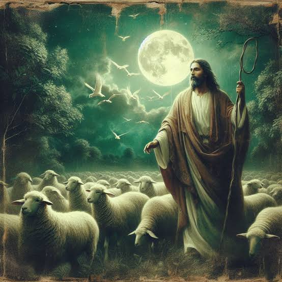

Part 4 of 6 · Alma 50:4
Detect
Know what ordinary looks like.
“He caused towers to be erected that overlooked those works of pickets.”Alma 50:4
To detect something out of the ordinary, you must first know what ordinary is. Part of this is knowing what the companionship of the Spirit feels like, and what it feels like when the Spirit leaves. You also need a routine, and to know how you normally act, so you can tell when something is different. It is the difference between normal activity and odd behavior.
Be careful, though. When the mind is assaulted for a long time, it becomes hard to remember how things should be. Odd behavior becomes a daily habit, then it becomes part of the routine, and then it is much harder to detect and act on.

Add
images/christ-detect.jpgIn the NIST framework
Notice when something is wrong, as early as possible.
On the home network
Watch for odd network activity: new devices, logins at strange hours, or traffic to sites your family doesn’t use.
Activity
Spot the Difference
- Show two nearly identical pictures and have the family find what changed.
- Ask, “How did you know?” You could only spot it because you knew the original.
- Talk about what it feels like when the Spirit is with you, and when it leaves.
- Ask: what in our home has slowly become “normal” that shouldn’t be?
Try it: tap the 5 differences in the second picture
You found them because you studied the first picture. In the same way, we notice when the Spirit leaves only if we know what it feels like when He is there.
Ponder
- What does it feel like when the Spirit is with me?
- What has slowly become normal in my life that shouldn’t be?